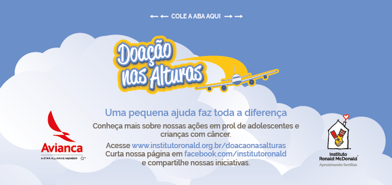

Organização vai aos céus para captar recursos e volta com R$ 450 mil
26 de Setembro de 2018 às 06:00
Pelo sistema de anúncio a bordo, o comandante orienta: “Tripulação, portas em automático”. Os procedimentos para a decolagem são iniciados e os passageiros, já acomodados nas poltronas, aguardam a tradicional explicação sobre o que fazer em caso de emergência. Mas antes das instruções de segurança, são surpreendidos pela exibição de um vídeo sobre o trabalho do Instituto Ronald McDonald em prol de crianças e adolescentes com câncer. A ação só termina mesmo no final do voo, quando os viajantes devolvem para a tripulação os envelopes que receberam no momento do embarque. Dentro de muitos deles, doações de diferentes valores. Assim, nos ares, a organização captou, desde 2013, R$ 450 mil.
“Já tínhamos visto ações como essa em outros países, mas nada igual havia sido feito no Brasil. Há uma enorme demanda por recursos na causa da oncologia pediátrica, com a qual trabalhamos. Sempre estamos procurando novas maneiras de captar. Aproveitamos a oportunidade”, explica Mariana Gomes, da área de Desenvolvimento Institucional do Instituto Ronald McDonald.
A “oportunidade”, no caso, era a proximidade já existente entre pessoas que trabalhavam na organização e na companhia aérea Avianca Brasil. “Conseguimos, assim uma entrada e chegamos à presidência, para quem apresentamos a ideia”, completa.
A campanha “Doação nas Alturas” funciona basicamente assim: os passageiros recebem os envelopes individuais quando entram no avião. Após a exibição do vídeo, o chefe de cabine reforça a mensagem, pedindo a doação, que é anônima e não tem valor estipulado.
Todas essas ações, aparentemente simples, só funcionam graças a uma combinação de forças.“As empresas de catering (que fornecem alimentos e bebidas aos voos), como a Gate Gourmet, toparam fazer gratuitamente o serviço de entrega e retirada dos envelopes do avião. Já a companhia que faz a coleta de valores e que atende a Avianca Brasil também faz voluntariamente o trabalho de abrir os envelopes, receber o dinheiro e, depois, repassar a quantia para o Instituto”, destaca Mariana.
As equipes de voo também são treinadas para aprender sobre a campanha e o trabalho desenvolvido pelo Instituto Ronald McDonald, afinal, como explica Mariana: “esse não pode ser apenas mais um procedimento a cumprir, e os tripulantes têm um efeito multiplicador”.
Os recursos arrecadados, segundo Mariana, são destinados a projetos coordenados pelo Instituto, como a capacitação de profissionais de saúde para o diagnóstico precoce do câncer infantojuvenil.
“É muito gratificante poder participar dessa ação com uma organização tão séria como Instituto Ronald McDonald. Essa corrente do bem ajuda a conectar milhões de pessoas de todo o Brasil a uma causa muito importante que leva esperança a milhares de jovens com câncer”, comentou Frederico Pedreira, presidente da Avianca Brasil.
Ultrapassando fronteiras
A ação começou tendo como base, por escolha da Avianca Brasil, os aeroportos que fazem a ponte aérea: Congonhas, em São Paulo, e Santos Dummont e Galeão, no Rio de Janeiro. Logo alcançou também Brasília. Por iniciativa da própria companhia, no entanto, a campanha foi levada para aeroportos de outras seis capitais em 2016: Aracaju (SE), Curitiba (PR), Florianópolis (SC), Fortaleza (CE), João Pessoa (PB), Recife (PE) e Salvador (BA).
Com os novos pontos de partida, o número de voos semanais alcançados pela campanha aumentou em 42%. A reboque, essa ampliação levou o Instituto a atingir outro objetivo: levar sua causa para um número de pessoas cada vez maior. “Não são todos os passageiros que doam, mas um dado importante é que, desde o princípio da campanha, mais de seis milhões de passageiros viram nosso vídeo, e isso é uma maneira de conhecerem nosso trabalho”, ressalta Mariana.
Não à toa, a ação foi vencedora da categoria “Campanha Inovadora” na edição de 2015 do Prêmio Mobiliza, iniciativa conjunta da Associação Brasileira de Captadores de Recursos e do Instituto Filantropia que reconhece ações criativas de captação.
Ah, e a campanha continua por aí cruzando os ares do Brasil em nome de uma boa causa!
“Já tínhamos visto ações como essa em outros países, mas nada igual havia sido feito no Brasil. Há uma enorme demanda por recursos na causa da oncologia pediátrica, com a qual trabalhamos. Sempre estamos procurando novas maneiras de captar. Aproveitamos a oportunidade”, explica Mariana Gomes, da área de Desenvolvimento Institucional do Instituto Ronald McDonald.
A “oportunidade”, no caso, era a proximidade já existente entre pessoas que trabalhavam na organização e na companhia aérea Avianca Brasil. “Conseguimos, assim uma entrada e chegamos à presidência, para quem apresentamos a ideia”, completa.
A campanha “Doação nas Alturas” funciona basicamente assim: os passageiros recebem os envelopes individuais quando entram no avião. Após a exibição do vídeo, o chefe de cabine reforça a mensagem, pedindo a doação, que é anônima e não tem valor estipulado.
Todas essas ações, aparentemente simples, só funcionam graças a uma combinação de forças.“As empresas de catering (que fornecem alimentos e bebidas aos voos), como a Gate Gourmet, toparam fazer gratuitamente o serviço de entrega e retirada dos envelopes do avião. Já a companhia que faz a coleta de valores e que atende a Avianca Brasil também faz voluntariamente o trabalho de abrir os envelopes, receber o dinheiro e, depois, repassar a quantia para o Instituto”, destaca Mariana.
As equipes de voo também são treinadas para aprender sobre a campanha e o trabalho desenvolvido pelo Instituto Ronald McDonald, afinal, como explica Mariana: “esse não pode ser apenas mais um procedimento a cumprir, e os tripulantes têm um efeito multiplicador”.
Os recursos arrecadados, segundo Mariana, são destinados a projetos coordenados pelo Instituto, como a capacitação de profissionais de saúde para o diagnóstico precoce do câncer infantojuvenil.
“É muito gratificante poder participar dessa ação com uma organização tão séria como Instituto Ronald McDonald. Essa corrente do bem ajuda a conectar milhões de pessoas de todo o Brasil a uma causa muito importante que leva esperança a milhares de jovens com câncer”, comentou Frederico Pedreira, presidente da Avianca Brasil.
Ultrapassando fronteiras
A ação começou tendo como base, por escolha da Avianca Brasil, os aeroportos que fazem a ponte aérea: Congonhas, em São Paulo, e Santos Dummont e Galeão, no Rio de Janeiro. Logo alcançou também Brasília. Por iniciativa da própria companhia, no entanto, a campanha foi levada para aeroportos de outras seis capitais em 2016: Aracaju (SE), Curitiba (PR), Florianópolis (SC), Fortaleza (CE), João Pessoa (PB), Recife (PE) e Salvador (BA).
Com os novos pontos de partida, o número de voos semanais alcançados pela campanha aumentou em 42%. A reboque, essa ampliação levou o Instituto a atingir outro objetivo: levar sua causa para um número de pessoas cada vez maior. “Não são todos os passageiros que doam, mas um dado importante é que, desde o princípio da campanha, mais de seis milhões de passageiros viram nosso vídeo, e isso é uma maneira de conhecerem nosso trabalho”, ressalta Mariana.
Não à toa, a ação foi vencedora da categoria “Campanha Inovadora” na edição de 2015 do Prêmio Mobiliza, iniciativa conjunta da Associação Brasileira de Captadores de Recursos e do Instituto Filantropia que reconhece ações criativas de captação.
Ah, e a campanha continua por aí cruzando os ares do Brasil em nome de uma boa causa!
Notícias mais populares
Gestão
Em agosto de 2017, a revista ÉPOCA e o Instituto Doar divulgaram a primeira ediç&...
Contexto e tendências
Criado para tornar mais transparentes as parcerias entre a administração públic...
Profissional captador
A captação de recursos é fundamental para a sustentabilidade de uma organiza&cc...